안저검사 기초와
흔한 소견 · Red Flag
건강검진에서 놓치면 안 되는 안저 소견 정리
일차진료·검진 판독자를 위한 아틀라스 · v0.1
목차
- 1. 안저검사 기초 — 해부와 판독 순서
- 1b. 적색반사 · 유두 · 황반 · C/D · A/V · ISNT 도해
- 2. 정상 안저
- 3. 병적으로 오인되는 정상 변이
- 4. 당뇨망막병증 (DR / DME)
- 5. 고혈압망막병증
- 6. 연령관련황반변성 · 녹내장
- 7. 망막혈관폐쇄 · 근시성 안저
- 8. Red Flag Signs · 아틀라스 · 요약
핵심 메시지 — 검진 안저판독의 실력은 “이상 소견을 찾는 능력”보다 정상 변이와 진짜 위험 신호를 구분하는 능력에서 갈린다.
판독 순서를 고정하라
Red reflex
Disc
Macula
Vessels
Periphery
왜 순서가 중요한가
- 순서를 고정하면 “안 보이는 소견”이 줄어든다
- 매번 같은 항목을 확인 → 재현성 향상
- 기록을 구조화하면 추적 비교가 가능
유의
- 검진 안저사진은 단안(monocular) → 입체감 없음
- 주변부는 일부 가려질 수 있음
- 증상(비문증·섬광·시야결손)이 있으면 사진이 정상이어도 의뢰
정상 안저 해부와 정상 수치
| 구조 | 정상 소견 | 이상 시 의심 |
|---|---|---|
| 시신경유두 | 분홍빛, 경계 명확, C/D ≤ 0.5, 신경망막테두리 균일 | 부종, 창백, 함몰 증가, 유두출혈 |
| 황반 | 중심와가 더 어둡고 무혈관, 정상 반사 | 삼출물, 출혈, 부종, 드루젠, 막 |
| 혈관 | A/V ratio ≈ 2:3, 자연정맥박동, 규칙적 주행 | 협착, 굴곡, 염주상, 폐쇄, 색전 |
| 배경망막 | 균일한 주황색, 병변 없음 | 출혈, 견과반점, 색소변화, 위축 |
ISNT rule
테두리 두께 I > S > N > T. 위반 시 녹내장 의심.
C/D ratio
좌우 차 ≥ 0.2 또는 ≥ 0.6~0.7 → 녹내장 의심.
정맥박동
자연정맥박동 존재 → 두개내압 상승 배제에 유용.
적색반사 (Red reflex) — 가장 먼저 보는 것
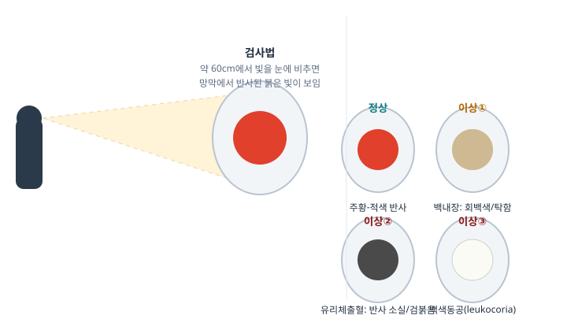
망막에서 반사된 붉은 빛. 약 60cm에서 빛을 비추어 양안을 비교한다. 매체(각막·수정체·유리체)가 투명해야 보인다.
정상
선명한 주황-적색 반사, 양안 대칭.
이상 → 먼저 의심
- 반사 소실/혼탁 → 백내장, 각막혼탁
- 검붉음 → 유리체출혈, (큰) 망막박리
- 흰색(leukocoria) → 소아 망막모세포종, 선천백내장
- 비대칭 → 사시, 안구내 종양
“들여다볼 수 없으면 환자도 못 본다” — 안저가 안 보이면 매체혼탁부터 평가.
안저 기본 구조 — 무엇을 보는가
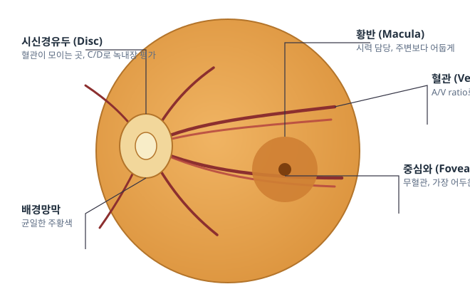
시신경유두 (Disc)
혈관이 드나드는 곳. C/D·테두리로 평가. 이상 → 경계흐림=유두부종(두개내압), 함몰증가=녹내장, 창백=시신경병증.
황반 (Macula) · 중심와
시력 담당, 주변보다 어둡고 무혈관. 이상 → AMD, DME, 망막전막, CSCR.
혈관 (Vessels)
A/V ratio·교차로 평가. 이상 → 고혈압, 당뇨, 폐쇄, 색전.
배경망막
균일한 주황색. 이상 → 출혈, 견과반점, 색소변화, 위축.
C/D ratio (컵-유두비)
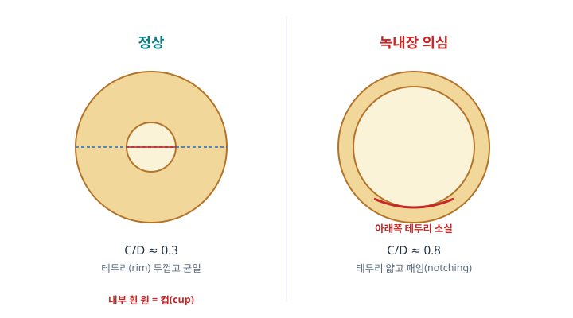
정의
컵(cup) 직경 ÷ 유두(disc) 직경. 시신경 테두리(rim) = 유두 − 컵.
정상
C/D ≤ 0.5, 좌우 차 < 0.2, 테두리 균일.
이상 → 먼저 의심
- C/D ≥ 0.6~0.7 또는 좌우 차 ≥ 0.2 → 녹내장
- 테두리 패임(notching), 유두출혈 → 진행성 녹내장
- 개방각 녹내장은 안압이 정상일 수 있음 → 시야검사/OCT 의뢰
A/V ratio · AV crossing
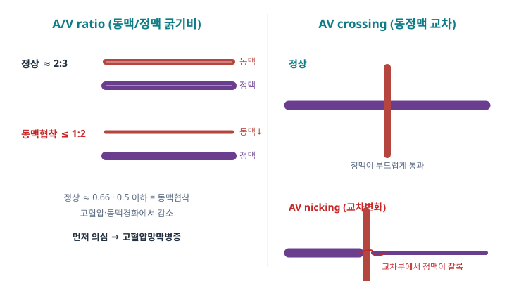
A/V ratio (동맥/정맥 굵기비)
정상 ≈ 2:3 (0.66). ≤ 0.5이면 동맥협착.
AV crossing (동정맥 교차)
동맥이 정맥 위를 지나며 정맥을 누름. 정상은 부드럽게 통과, 이상은 교차부에서 정맥이 잘록(AV nicking).
이상 → 먼저 의심
- A/V 감소·nicking → 고혈압망막병증 (KWB 1–2)
- 동맥경화, 당뇨에서도 동반
ISNT rule (테두리 두께 규칙)
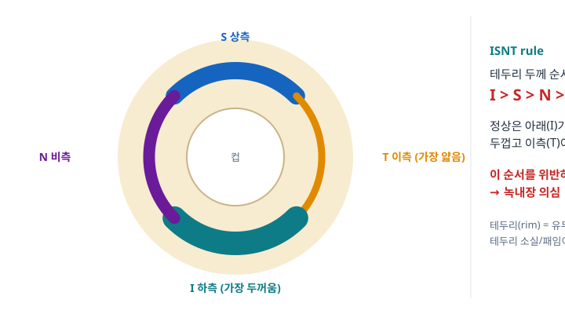
정의
신경망막테두리 두께 순서: I > S > N > T (하 > 상 > 비 > 이).
정상
아래(I)가 가장 두껍고, 이측(T)이 가장 얇다.
이상 → 먼저 의심
- 순서 위반, 테두리 소실/패임 → 녹내장
- C/D 확대와 함께 평가(단일 지표로 부족)
이상 시 먼저 의심할 것 — 요약
| 항목 | 정상 | 이상 시 먼저 의심 |
|---|---|---|
| 적색반사 | 주황-적색, 양안 대칭 | 백내장 · 유리체출혈 · 백색동공(소아 망막모세포종) |
| 유두 경계 | 명확 | 흐림/융기 → 유두부종(두개내압 상승) |
| C/D | ≤ 0.5, 좌우차 < 0.2 | ≥ 0.6~0.7 또는 좌우차 ≥ 0.2 → 녹내장 |
| 테두리(ISNT) | I > S > N > T | 위반/패임 → 녹내장 |
| A/V ratio | ≈ 2:3 (0.66) | ≤ 0.5 → 고혈압망막병증, 동맥경화 |
| AV crossing | 부드럽게 통과 | nicking → 고혈압/동맥경화 |
| 황반 | 무혈관, 정상 반사 | AMD · DME · 망막전막 · CSCR |
| 배경망막 | 균일한 주황색 | 출혈 · 견과반점 · 색소변화 |
정상 안저
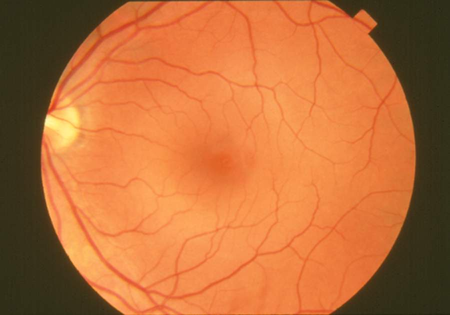
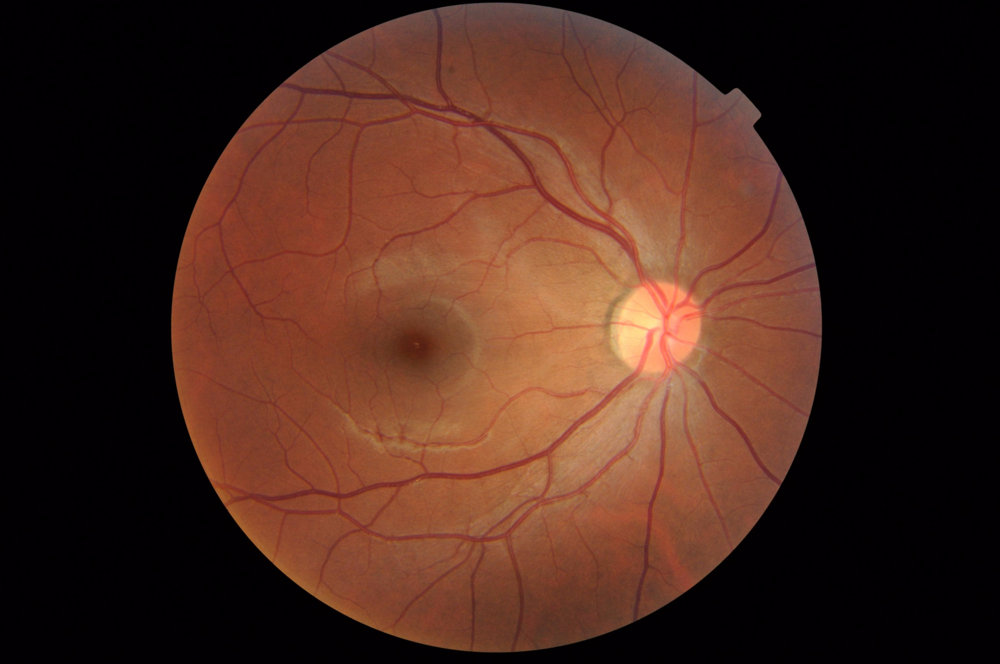
병적으로 오인되는 정상 변이
불필요한 의뢰·검사의 흔한 원인. 먼저 익혀야 하는 항목.
유두드루젠 (disc drusen)
경계 흐림·융기로 유두부종과 오인. 자가형광/OCT/B-scan으로 감별.
수초화 신경섬유
유두 주변 흰 깃털 모양 반점. 양성 소견.
경사시신경유두
CDR이 커 보이고 시야결손처럼 보일 수 있음.
맥락막 모반
편평한 색소 병변. 두께·orange pigment·drusen로 악성 감별.
당뇨망막병증 — 병변 용어
초기 ~ 비증식
- 미세혈관류 (microaneurysm) — 첫 징후
- 점상/반상 출혈, 화염상 출혈
- 경성 삼출물 (hard exudate)
- 견과반점 (cotton-wool spot)
- 정맥염주 (venous beading), IRMA
증식 (PDR)
- 신생혈관 (NVD/NVE)
- 유리체출혈, 전방출혈
- 섬유혈관증식막
- 견인망막박리
ICDR 국제 임상 등급 (Wilkinson 2003)
| 등급 | 소견 | 권고 |
|---|---|---|
| No apparent DR | 병변 없음 | 1년 후 재검 |
| Mild NPDR | 미세혈관류만 | 1년 후 재검 |
| Moderate NPDR | 경증 이상, severe 기준 미만 | 6개월 재검 또는 의뢰 |
| Severe NPDR | 4-2-1 rule (4사분면 출혈 / 2사분면 정맥염주 / 1사분면 IRMA) | 안과 의뢰, 2~4개월 |
| PDR | 신생혈관 / 유리체출혈 / 전방출혈 | 즉시 안과 의뢰 |
당뇨망막병증 아틀라스
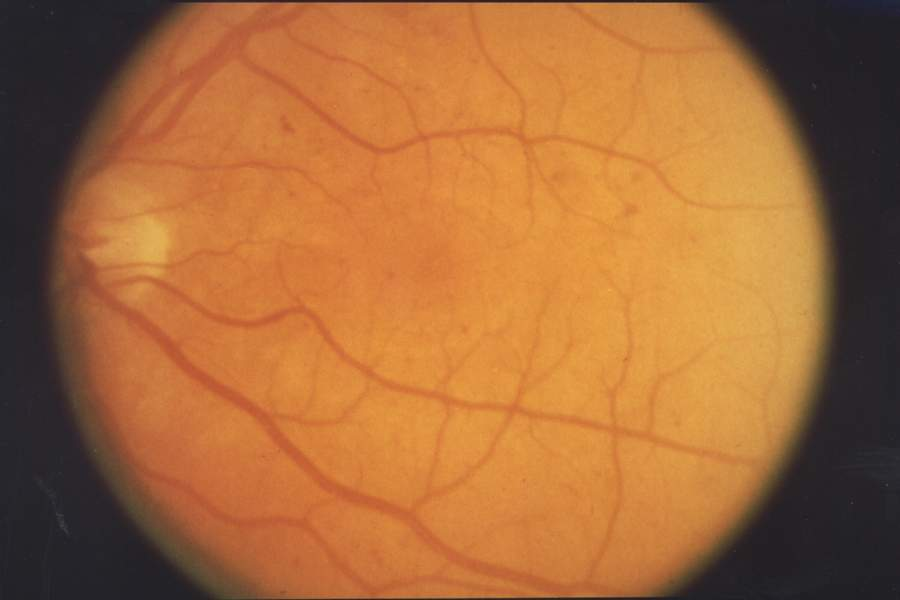
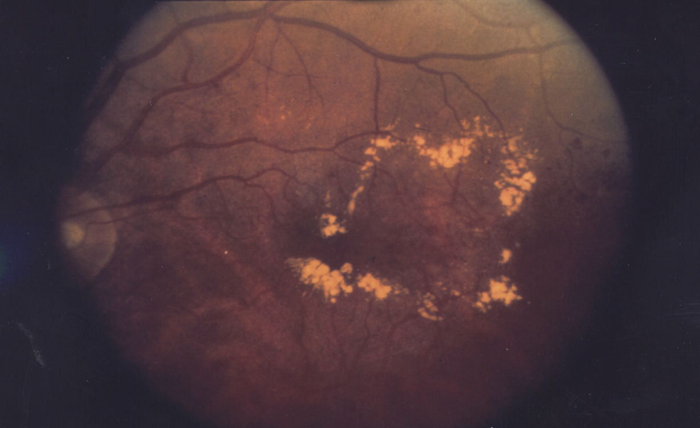

고혈압망막병증 Keith-Wagener-Barker
| Grade | 소견 |
|---|---|
| 1 | 동맥 협착/경도 경화, AV ratio 감소 |
| 2 | 초점성 협착, AV crossing change |
| 3 | 출혈, 견과반점, 경성삼출물 |
| 4 | Grade 3 + 시신경유두부종 |
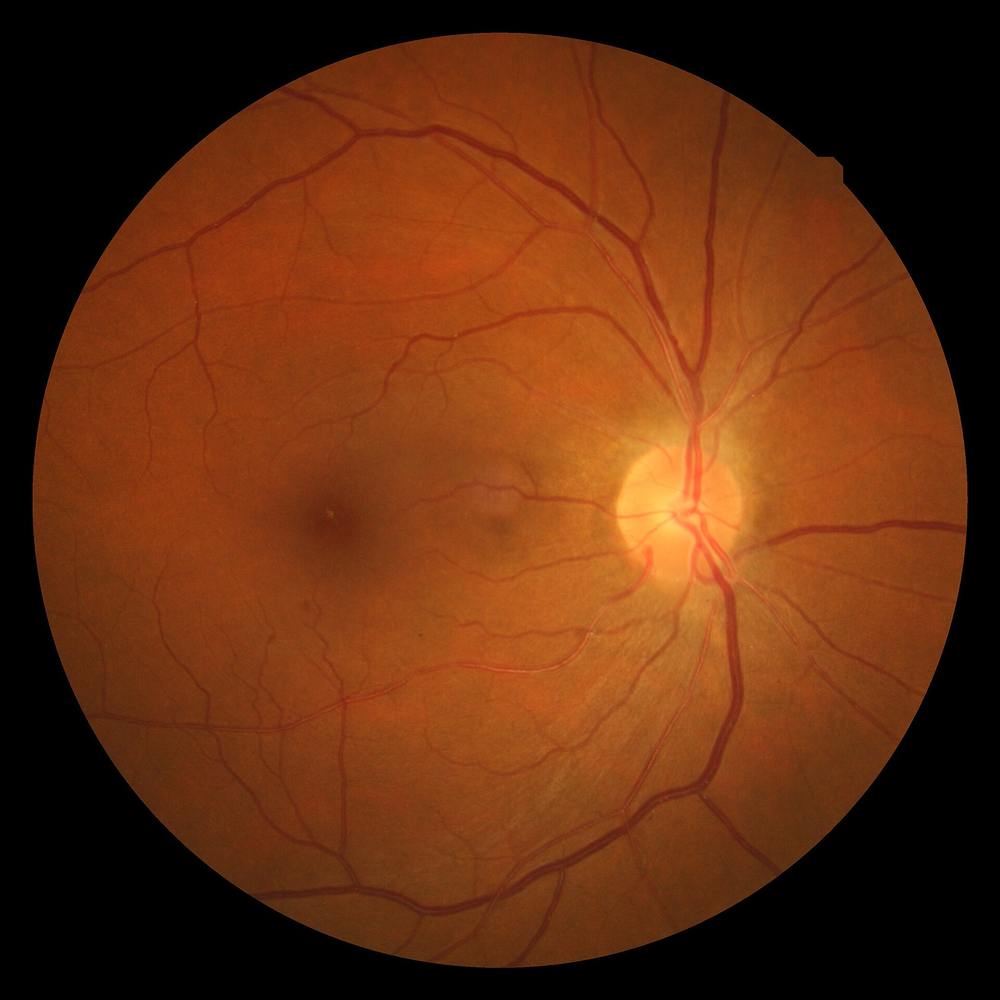
연령관련황반변성 (AMD)
건성 (dry)
드루젠(drusen), 지도상 위축. 서서히 진행.
습성 (wet, nAMD)
맥락막신생혈관(CNV) → 망막하출혈·삼출, 급격한 시력저하. 항VEGF 대상 → 조기 의뢰.
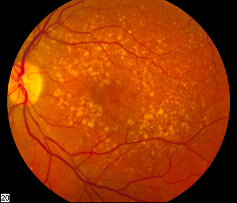
녹내장 의심 소견
- CDR ≥ 0.6, 좌우 차 ≥ 0.2
- 신경망막테두리 패임(notching), ISNT rule 위반
- 국소 RNFL 결손 (쐐기형 어두운 띠)
- 유두출혈(disc hemorrhage) — 진행 표지
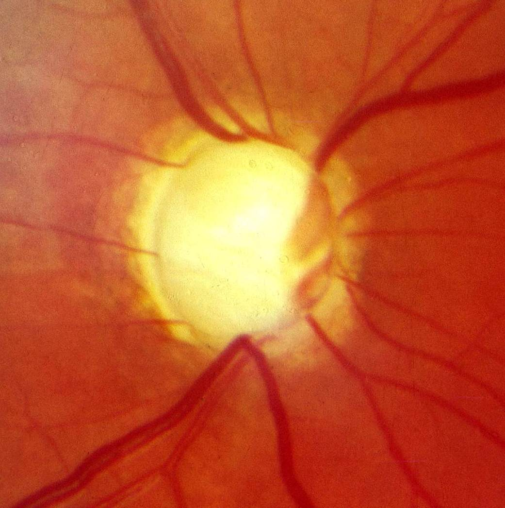
망막 혈관폐쇄 질환
BRVO
한 사분면 출혈·견과반점·부종, 정맥 굴곡. 황반부종 시 시력저하.
CRVO
전체 망막 화염상 출혈(blood and thunder), 정맥 확장. 허혈성은 NVG 위험 → 추적.
CRAO
창백한 망막 + 벚꽃빨강반점 → 응급. 뇌졸중/색전 평가.
BRAO / 색전
국소 백색 부종. Hollenhorst plaque → 목동맥/심장 색전원 평가.
혈관폐쇄 아틀라스
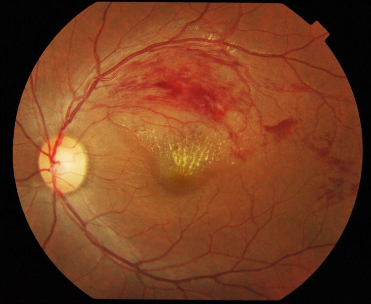
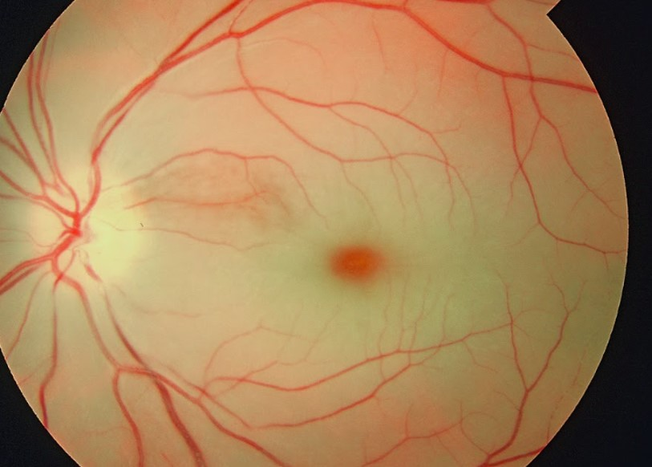
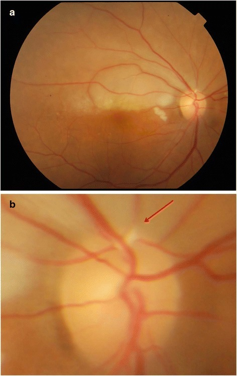
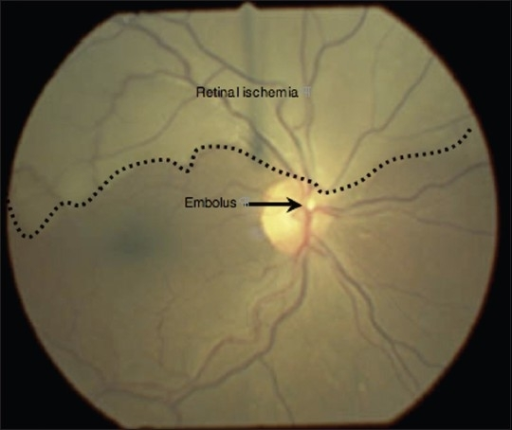
근시성 안저 · 그 밖에 흔한 소견
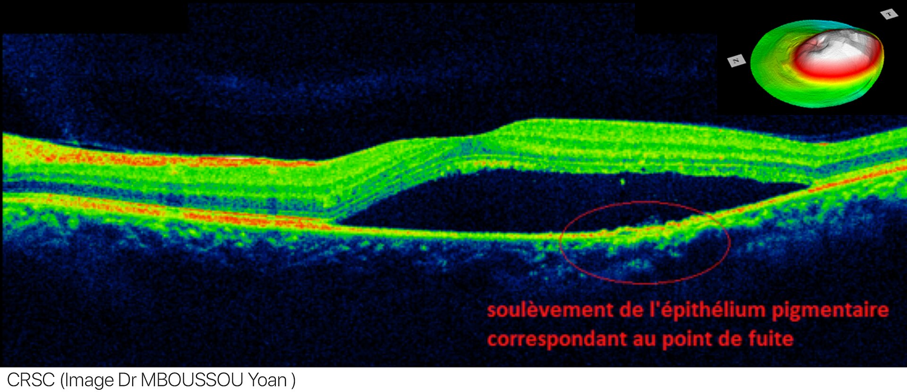
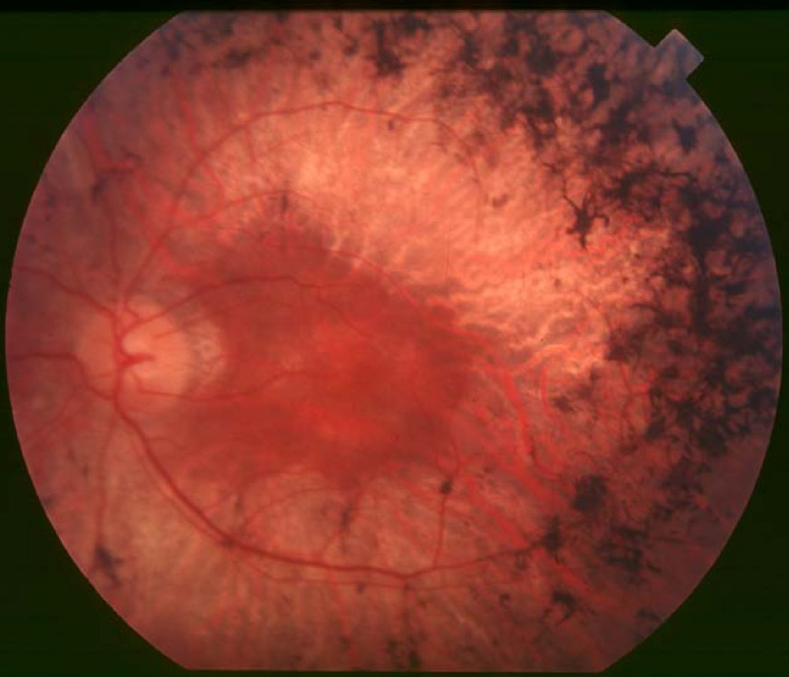
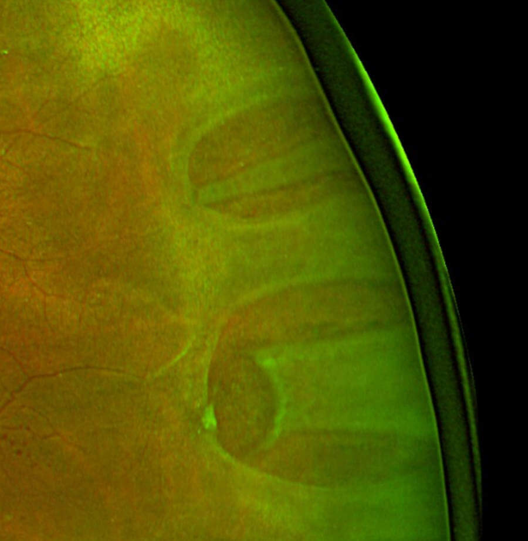
- 근시성 안저: 호랑이무늬, 유두주위 위축, 후포도종. -6D 이상은 망막열공/박리 고위험군 → 정기검사.
- 망막전막(ERM), 백내장/매체혼탁(적색반사 감소) 등도 검진에서 흔히 보인다.
놓치면 안 되는 위험 신호
우연히 발견될 수 있으므로 검진 판독 시 최우선으로 체크한다.
즉시 응급
양안 유두부종 · 망막박리/열공 · CRAO · 유리체출혈 · 소아 백색동공 · GCA 의심 시신경병증
긴급/준응급
신생혈관(PDR/NVG) · 악성 고혈압 안저 · Roth spot(심내막염/백혈병) · 안구내 종양 의심
시력 위협
중심와 침범 황반부종/삼출 · 허혈성 CRVO(→NVG) · wet AMD
Red Flag 상세 · 즉시 조치
| 소견 | 시사 상태 | 즉시 조치 | 응급도 |
|---|---|---|---|
| 양안 유두부종 | 두개내압 상승(종양/정맥동혈전/IIH/뇌수막염) | 뇌 MRI/MRV, 신경과 의뢰, 필요 시 LP | 최긴급 |
| GCA 의심 시신경병증(고령·턱통증) | 거대세포동맥염 → 실명 | 스테로이드 즉시 + 안과/류마티스 | 최긴급 |
| 망막박리 / 열공(암막·섬광·비문증) | 열공성 망막박리 | 즉시 안과 응급 의뢰, 체위 안정 | 최긴급 |
| CRAO(창백+벚꽃빨강반점) | 색전(심장/목동맥), GCA | 안과+신경과, 급성 뇌졸중 평가 | 최긴급 |
| 유리체출혈 / 신생혈관 | PDR, 열공, NVG | 즉시 안과 의뢰 | 긴급 |
| 악성 고혈압 안저(KWB 3–4) | accelerated/malignant HTN | 즉시 혈압 조절, 입원 고려 | 최긴급 |
| Roth spot / 다발성 백색중심 출혈 | 감염성 심내막염, 백혈병 | 혈액배양/검사, 내과 의뢰 | 긴급 |
| 소아 백색동공(leukocoria) | 망막모세포종, 선천백내장 | 즉시 안과 의뢰 | 최긴급 |
시신경유두부종 (Papilledema)
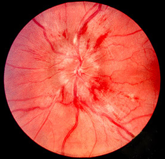

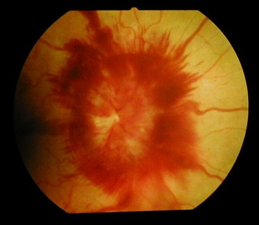
Red Flag 아틀라스
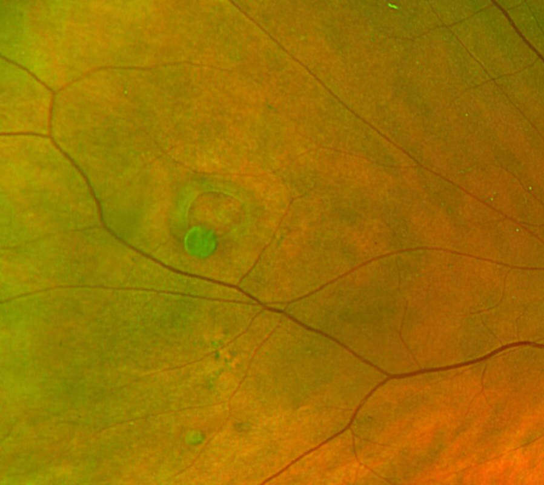
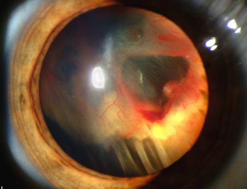
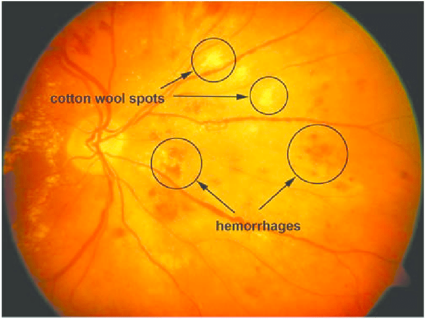
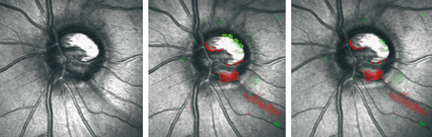
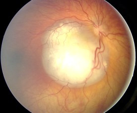
Take-home messages
1. 순서를 고정
적색반사 → 유두 → 황반 → 혈관 → 주변부.
2. 변이 vs 병적
유두드루젠·수초섬유·경사유두·모반을 먼저 익혀 오인을 줄인다.
3. 등급 체계 활용
ICDR(DR), KWB(HTN), Frisén(유두부종)으로 의사소통 표준화.
4. Red flag 우선
양안 유두부종·망막박리·CRAO·신생혈관·악성고혈압은 즉시 의뢰.
References
- Wilkinson CP, et al. Proposed international clinical DR and DME disease severity scales. Ophthalmology. 2003;110(9):1677-1682.
- Keith NM, Wagener HP, Barker NW. Some different types of essential hypertension. Am J Med Sci. 1939;197:332-343.
- Frisén L. Swelling of the optic nerve head: a staging scheme. J Neurol Neurosurg Psychiatry. 1982;45(1):13-18.
- Tao B, et al. Papilledema. StatPearls. 2025. NCBI Bookshelf NBK538295.
- Schneiderman H. The Funduscopic Examination. Clinical Methods, 3rd ed. NCBI NBK221.
- Stanford Medicine 25. Fundoscopic Exam (Ophthalmoscopy).
- Diagnosis of Optic Disc Oedema: Fundus Features, Ocular Imaging. PMC10332214.
이미지: Wikimedia Commons (Public Domain / CC-BY / CC-BY-SA). 전체 출처·라이선스는 assets/images/CREDITS.json. 본 자료는 의료진 학습용이며 개별 환자 진단·치료 지침이 아니다.